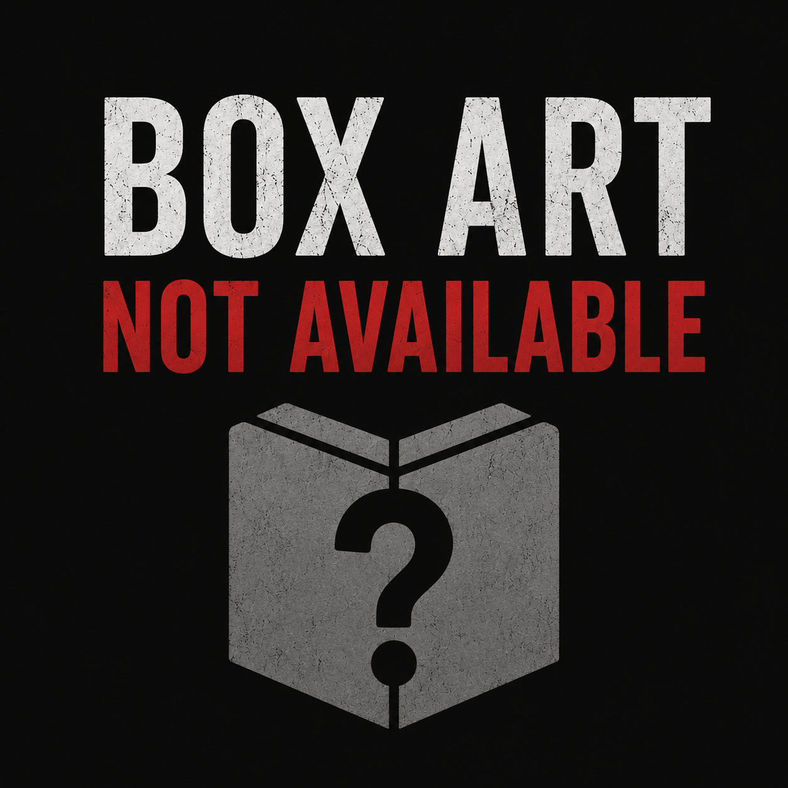

Released: 2001
7 games
The GP32 (GamePark 32) is a handheld game console developed by the Korean company Game Park. It was released on November 23, 2001, in South Korea only.
| Cover | Title | Year | Genre | Publisher | Developer |
|---|---|---|---|---|---|
|
 |
Blue Angelo: Angels from the Shrine | 2004 | Role-Playing | Shibuya Interactive | Virtual Spaghetti |
| Dungeon & Guarder: Dragon Gore | 2001 | Beat 'em Up | Gamepark | Gamepark | |
| Dyhard: With Infinite Stairs | 2001 | Action | Gamepark | Kookie Soft | |
| Her Knights: All for the Princess | 2002 | Action | Gamepark | Byulbram | |
| Little Wizard | 2001 | Fighting | Gamepark | Gamepark | |
| Tomak: Save the Earth, Again | 2002 | Action • Shooter | Gamepark | Seed9 | |
| Woody & Kunta: Treasure Island | 2002 | Puzzle | Gamepark | Gamepark |